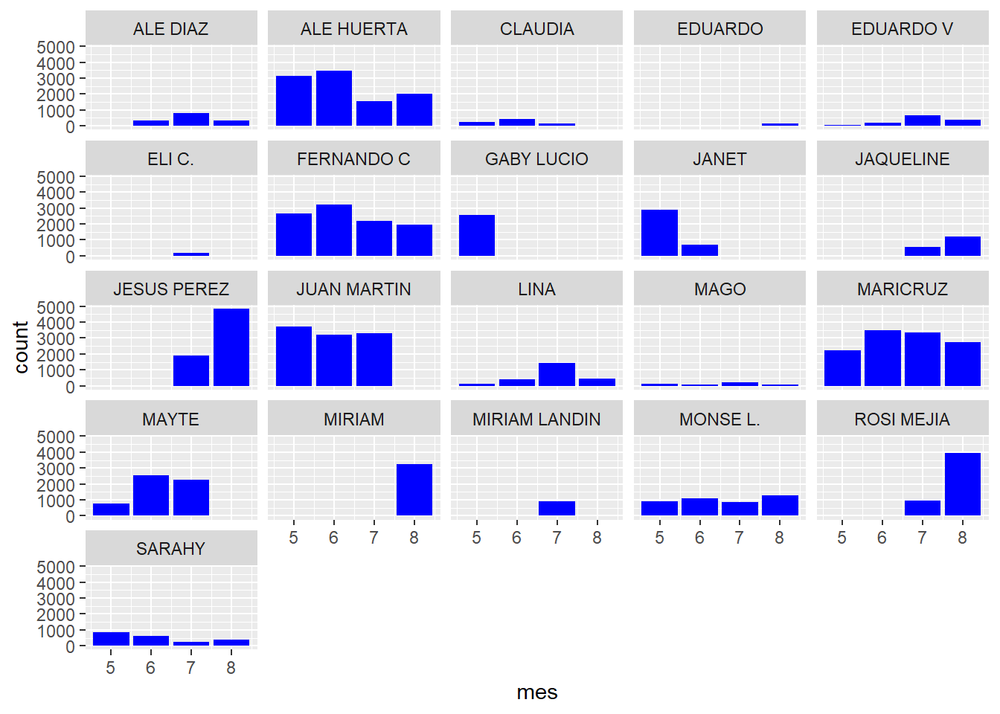

A continuación, realizamos un análisis descriptivo de la información contenida en el dataset, transformaremos y limpiaremos los datos. Luego, realizaremos un conjunto de esquemas gráficos los cuales nos permitirán realizar interesantes conclusiones.
##Análisis de dataset
#Seteo directorio de trabajo
setwd("C:/CursoR")
#lectura df (dataframe)
library(readr)
df <- read_csv("./files/Supermarkets_Sales.csv",col_names=TRUE)## Rows: 84881 Columns: 5
## -- Column specification ------------------------------------------------------------------------------------------
## Delimiter: ","
## chr (2): Folio, Cajero
## dbl (2): Total, Pago
## dttm (1): Hora
##
## i Use `spec()` to retrieve the full column specification for this data.
## i Specify the column types or set `show_col_types = FALSE` to quiet this message.df=as.data.frame(df)El dataset está conformado por 84881 registros, distribuidos en 5 columnas. Estas últimas corresponden a Folio, Cajero, Hora, Total y Pago
#Cantidad de registros
dim(df)## [1] 84881 5# Cantidad de columnas
ncol(df)## [1] 5Se realiza un revisión para detectar si el dataset contiene valores nulos y solo vamos a considerar los valores totales mayores a “0”.
#chequeo valores nulos
library(ggplot2)
library(DataExplorer)
plot_missing(
data=df,
title="Porcentaje de valores ausentes",
ggtheme=theme_bw(),
theme_config=list(legend.position="none"))df=df[df$Total > 0,]
head(df)## Folio Hora Total Pago Cajero
## 1 LBVT18010004435 2018-05-01 12:36:48 1121.20 1121.20 MAYTE
## 2 LBVT18010004436 2018-05-01 12:37:18 18.50 20.00 MAYTE
## 3 LBVT18010004437 2018-05-01 12:38:59 160.00 200.00 MAYTE
## 4 LBVT18010004438 2018-05-01 12:47:49 397.50 397.50 MAYTE
## 5 LBVT18010004439 2018-05-01 12:48:16 22.00 50.00 MAYTE
## 6 LBVT18010004440 2018-05-01 12:53:07 1314.19 1314.19 MAYTEPara una mejor comprensión, realizamos un cambio de nombres en las variables analizadas.
names(df)=c("Folio","Tiempo", "Total","Pago","Cajero")Agregamos nuevas columnas al conjunto de datos (“Fecha”, “mes”, “hora”).
library(lubridate)
library(tidyverse)
df<-mutate(df, mes=month(df$Tiempo))
df<-mutate(df, hora=hour(df$Tiempo))
df<-mutate(df, fecha=date(df$Tiempo))
head(df)## Folio Tiempo Total Pago Cajero mes hora fecha
## 1 LBVT18010004435 2018-05-01 12:36:48 1121.20 1121.20 MAYTE 5 12 2018-05-01
## 2 LBVT18010004436 2018-05-01 12:37:18 18.50 20.00 MAYTE 5 12 2018-05-01
## 3 LBVT18010004437 2018-05-01 12:38:59 160.00 200.00 MAYTE 5 12 2018-05-01
## 4 LBVT18010004438 2018-05-01 12:47:49 397.50 397.50 MAYTE 5 12 2018-05-01
## 5 LBVT18010004439 2018-05-01 12:48:16 22.00 50.00 MAYTE 5 12 2018-05-01
## 6 LBVT18010004440 2018-05-01 12:53:07 1314.19 1314.19 MAYTE 5 12 2018-05-01Una vez que ya tenemos nuestro conjunto de datos transformado y limpio, procedemos a confeccionar un conjunto de gráficos estadísticos con el fin de detectar patrones de comportamiento y así adoptar medidas pertinentes que permitan por ejemplo, incrementar las ventas del supermercado.
A continuación se muestra un esquema, en la que se demuestra la cantidad de ventas realizadas por cada uno de los cajeros del supermercado.
#graficos por cantidad de venta, según empleado
library(ggplot2)
grafico<-ggplot(df,aes(x=Cajero)) + geom_bar(fill="blue") + coord_flip()
grafico + theme_classic()Se puede observar que el empleado identificado como “Maricruz”, es el que mas ventas ha realizado del grupo.
Se realiza un agrupamiento de la información, considerando el promedio del total de ventas realizadas por mes.
#agrupo por mes
df2<-df %>%
group_by(mes)%>%
# count(df, "mes")
summarise(Prom_total=mean(Total))
df2## # A tibble: 4 x 2
## mes Prom_total
## <dbl> <dbl>
## 1 5 186.
## 2 6 190.
## 3 7 195.
## 4 8 192.Se observa que el promedio del Total, se encuentra en el rango de $184 @ $194, con tendencia alcista.
La cantidad de ventas realizadas por mes, se observan en el siguiente esquema:
grafico<-ggplot(df,aes(x=mes)) + geom_bar(fill="blue") + coord_flip()
grafico + theme_classic()Se observa que levemente la cantidad de ventas esta aumentando mes a mes.
Se realiza un agrupamiento de la información, considerando el promedio del total de ventas realizadas por hora.
df3<-df %>%
group_by(hora)%>%
summarise(Prom_total=mean(Total))
df3## # A tibble: 15 x 2
## hora Prom_total
## <int> <dbl>
## 1 7 91.5
## 2 8 143.
## 3 9 161.
## 4 10 151.
## 5 11 164.
## 6 12 204.
## 7 13 216.
## 8 14 201.
## 9 15 200.
## 10 16 173.
## 11 17 179.
## 12 18 198.
## 13 19 206.
## 14 20 214.
## 15 21 264.Los horarios en donde se observa que el cliente realiza un mayor gasto es a las 13 hrs y 21 hrs.
La cantidad de ventas realizadas por hora, se observan en el siguiente esquema:
grafico<-ggplot(df,aes(x=hora)) + geom_bar(fill="blue") + coord_flip()
grafico + theme_classic()El horario en que se producen mayor cantidad de ventas es a las 20 hrs
El gráfico siguiente representa un esquema en la que se detallan la cantidad de ventas por mes, realizadas por cada uno de los cajeros.
#agrupo por mes y vendedor
ggplot(df,aes(x=mes)) + geom_bar(fill="blue") + facet_wrap(~Cajero, nrow=5)
Se puede apreciar que hay muy pocos cajeros (8/21) que han realizado ventas en el periodo comprendido entre mayo y agosto del 2018. El resto solo ha vendido en uno o más meses.